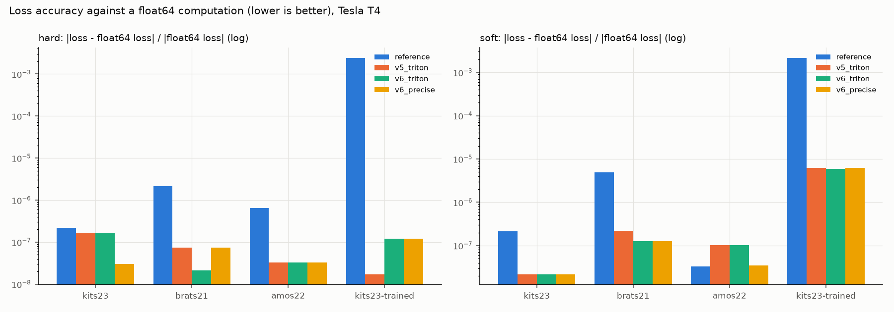

Sprints: S1, S9
2. Proving "same as the original"
A faster loss is worthless if it computes something else. This page shows the layers of evidence that every implementation returns the same loss and the same gradient as the upstream code, and how "same" is defined for floating point.
Concept: five independent layers
| layer | question it answers | where |
|---|---|---|
| frozen reference | is our ground truth really the upstream code? | tests/test_reference_frozen.py |
| independent oracle | does the upstream code compute the paper's formula? | tests/oracle.py, test_oracle.py |
| golden files + 43 cases | does every implementation match the reference on curated edge cases? | tests/golden/, test_golden.py |
| random equivalence | ... and on random shapes, classes, bins, options? | test_equivalence.py (hypothesis) |
| full-size output check | ... at real training sizes on the GPU, vs a float64 truth? | ace_bench/measure.py |
Plus targeted tests per technique: gradcheck of the handwritten backward
(test_v2.py), exact bin counts and kernel-vs-PyTorch statistics (test_triton.py),
the drop-in module against the upstream classes (test_module.py), no host syncs and
CUDA-graph capture (test_sync.py), memory saved for backward (test_saved_tensors.py).
No benchmark of an implementation runs unless all of these pass (the Kaggle job's
first step is the full test suite).
Golden files: one test, every implementation
The reference's outputs (loss and input gradient) for the 43 named cases are stored
once in tests/golden/. One parametrized test runs every registered implementation on
every case and device:
32@pytest.mark.parametrize("device", DEVICES)
33@pytest.mark.parametrize("case_name", sorted(GOLDEN))
34@pytest.mark.parametrize("impl", [s.name for s in available_impls()])
35def test_matches_golden(impl: str, case_name: str, device: str) -> None:
Three parametrizations multiply: every device (CPU, and CUDA when present) x every golden case (43) x every registered implementation (18). pytest generates one test per combination: ~1500 tests from 15 lines. available_impls() reads the registry, so a new implementation is covered automatically.
36 record = GOLDEN[case_name]
37 config = ACEConfig.model_validate(record["config"])
A golden record holds the exact input tensor, target, config, and the reference's loss and input gradient, computed once by scripts/make_golden.py and stored in tests/golden/reference_cases.pt (so the test does not depend on the reference running correctly today).
38 skip_unless_supported(impl, config.binning, device, case_name)
39 x, y = record["input"].to(device), record["target"].to(device)
Skips combinations an implementation does not support (e.g. Triton versions on the CPU), and limits slow implementations (torch.compile recompiles for every new shape) to a few smoke cases.
40 result = run(impl, x, y, config)
41 expected = Result(record["loss"], record["grad"])
run (in tests/helpers.py) makes a fresh leaf tensor, computes the loss, backpropagates loss.sum() and returns loss + input gradient.
42 if get_impl(impl).slow and case_name in TIE_CASES: # see TIE_CASES
43 assert_same(Result(result.loss, expected.grad), expected)
44 assert torch.isfinite(result.grad).all()
45 return
Tie cases (exact mean p == mean y in a bin) have a legitimately different subgradient under compiled code: only the loss is checked exactly there, the gradient for finiteness.
46 assert_same(result, expected)
Loss and gradient compared with the documented tolerances (loss 1e-5 relative; gradient 1e-4 CPU / 1e-3 CUDA).
The cases are the edge conditions where an implementation is most likely to differ:
117def _cases() -> list[Case]:
118 cases: list[Case] = []
119 cases += _both("paper-3d", _BASE, **_PAPER)
120 cases += _both("2d", InputSpec(2, 3, (16, 16), seed=1), **_PAPER)
121 cases += _both("1d", InputSpec(1, 2, (50,), seed=2), **_PAPER)
122 cases += _both("many-classes", InputSpec(1, 16, (4, 4, 4), seed=3), **_PAPER)
123 cases += _both("onehot-target", _ONEHOT, activation="softmax")
124 cases += _both(
125 "saturated-logits", InputSpec(2, 4, (6, 6, 6), 4, logit_scale=30.0), **_PAPER
126 )
127 empty = InputSpec(2, 4, (6, 6, 6), seed=5, missing_classes=(2,))
128 cases += _both("empty-class-ignored", empty, **_PAPER)
129 cases += _both("empty-class-kept", empty, **_PAPER, ignore_empty_classes=False)
130 cases += _both("no-background", _BASE, **_PAPER, include_background=False)
131 cases += _both("class-weights", _BASE, **_PAPER, weight=(0.1, 1.0, 2.0, 0.5))
132 cases += _both("scalar-weight", _BASE, **_PAPER, weight=2.0)
133 cases += _both("reduction-sum", _BASE, **_PAPER, reduction="sum")
134 cases += _both("reduction-none", _BASE, **_PAPER, reduction="none")
135 cases += _both(
136 "sigmoid-binary", InputSpec(2, 1, (8, 8, 8), seed=6), activation="sigmoid"
137 )
138 cases += _both("one-bin", _BASE, **_PAPER, num_bins=1)
139 cases += _both(
140 "fifty-bins", InputSpec(1, 4, (12, 12, 12), seed=7), **_PAPER, num_bins=50
141 )
142 probs = InputSpec(2, 4, (6, 6, 6), seed=8, kind="probs", labels_as_index=False)
143 cases += _both("raw-probs", probs, **_PROBS)
144 const = InputSpec(2, 4, (6, 6, 6), seed=9, kind="constant", labels_as_index=False)
145 cases += _both("constant-probs", const, **_PROBS)
146 edges = InputSpec(2, 4, (6, 6, 6), seed=10, kind="bin_edges", labels_as_index=False)
147 cases += _both("bin-edges-left", edges, **_PROBS)
148 cases += _both("bin-edges-right", edges, **_PROBS, right=True)
149 extreme = InputSpec(2, 4, (6, 6, 6), seed=11, kind="extreme", labels_as_index=False)
150 cases += _both("extreme-probs", extreme, **_PROBS)
151 # 10.0 drops several sparse bins as "empty" (0.01 drops none for this input)
152 high_empty = {"binning": "soft", "empty_weight": 10.0, **_PAPER}
153 cases.append(
154 Case("soft-high-empty-weight", _BASE, ACEConfig.model_validate(high_empty))
155 )
156 return cases
Empty classes (ignored or kept), no background, class weights, all reductions, sigmoid, one bin, fifty bins, probabilities exactly on bin edges (both right modes), probabilities exactly 0/1, saturated logits, one-hot vs index targets.
The independent oracle
Golden files only prove "same as the reference". The oracle re-implements the paper's formula independently, in float64 NumPy, voxel by voxel, so a bug shared by the reference and our code would still be caught:
31def _hard_weights(p: F64, num_bins: int, right: bool) -> F64:
32 edges = _linspace32(num_bins + 1)[1:]
33 idx = np.searchsorted(edges, p, side="right" if right else "left")
34 w = np.zeros((p.size, num_bins))
35 w[np.arange(p.size), idx] = 1.0
36 return w
Hard weights as a dense [N, K] matrix in float64 NumPy: 1 in the column of each voxel's bin. np.searchsorted plays the role of torch.bucketize; the edge table is the reference's float32 linspace converted to float64, so edge voxels fall into the same bin.
39def _soft_weights(p: F64, num_bins: int) -> F64:
40 centres = _linspace32(2 * num_bins + 1)[1::2]
41 w = np.zeros((p.size, num_bins))
42 for i, v in enumerate(p):
43 if v <= centres[0]:
44 w[i, 0] = 1.0
45 elif v > centres[-1]:
46 w[i, -1] = 1.0
47 else:
48 j = int(np.searchsorted(centres, v, side="left")) - 1 # c_j < v <= c_j+1
49 t = (v - centres[j]) / (centres[j + 1] - centres[j])
50 w[i, j] += 1.0 - t
51 w[i, j + 1] += t
52 return w
Soft weights written straight from the definition, one voxel at a time: below the first centre or above the last, all weight on the end bin; otherwise linear interpolation 1 - t / t between the two neighbouring centres. Slow and obviously correct, which is the point of an oracle.
55def _slice_error(p: F64, y: F64, config: ACEConfig) -> float:
56 if config.binning == "hard":
57 w = _hard_weights(p, config.num_bins, config.right)
58 empty = w.sum(0) == 0
59 else:
60 w = _soft_weights(p, config.num_bins)
61 empty = w.sum(0) < config.empty_weight
62 weight_sum = w.sum(0)
63 errors = [
64 abs(w[:, k] @ p - w[:, k] @ y) / weight_sum[k]
65 for k in range(config.num_bins)
66 if not empty[k]
67 ]
68 return float(np.mean(errors))
The formula itself for one (b, c) slice: per non-empty bin k, |w_k · p - w_k · y| / W_k (weighted means), then the mean over non-empty bins. Matrix-vector products in float64: no summation-order issues at test sizes.
71def oracle_ace(input: F64, target: F64, config: ACEConfig) -> F64:
72 """mL1-ACE for ``input`` [B, C, ...] logits/probs and one-hot ``target``."""
73 x = input.astype(np.float64)
74 if config.activation == "softmax" and x.shape[1] > 1:
75 e = np.exp(x - x.max(axis=1, keepdims=True))
76 x = e / e.sum(axis=1, keepdims=True)
77 elif config.activation == "sigmoid":
78 x = 1.0 / (1.0 + np.exp(-x))
79 y = target.astype(np.float64)
80 if not config.include_background and x.shape[1] > 1:
81 x, y = x[:, 1:], y[:, 1:]
82
83 b, c = x.shape[:2]
84 xf, yf = x.reshape(b, c, -1), y.reshape(b, c, -1)
85 f = np.array(
86 [[_slice_error(xf[i, j], yf[i, j], config) for j in range(c)] for i in range(b)]
87 )
Activation in float64 (numerically stable softmax: subtract the max), optional background removal, then the slice error for every (b, c).
88 if config.ignore_empty_classes:
89 f = f * (yf.sum(-1) > 0)
90 if config.weight is not None and c != 1:
91 f = f * np.broadcast_to(np.asarray(config.weight, dtype=np.float64), (c,))
92 if config.reduction == "mean":
93 return np.asarray(f.mean())
94 if config.reduction == "sum":
95 return np.asarray(f.sum())
96 return f.reshape(b, c, *([1] * (x.ndim - 2)))
Empty-class mask, class weights and reduction, mirroring the options of the upstream class. test_oracle.py asserts the reference matches this on all 43 cases: the ground truth is itself verified.
Tolerances: why these numbers
12# fp32 tolerances for "same loss" between implementations. Summation order
13# differs between implementations (and atomics on GPU), so exact equality is not
14# expected; the reference itself agrees with the float64 oracle to ~1e-6.
15LOSS_RTOL, LOSS_ATOL = 1e-5, 1e-6
16GRAD_RTOL, GRAD_ATOL = 1e-4, 1e-7
17# GPU vs CPU-golden gradients: CUDA sums in a different order (atomics, its own
18# softmax). With few voxels per bin the soft gradient's two nearly cancelling
19# terms amplify ~1e-7 rounding ~1000x (measured on a T4: 3 voxels, 5 classes,
20# rel. diff 3.5e-4). Still far below any real bug (mutants were off by >= 1%).
21CUDA_GRAD_RTOL, CUDA_GRAD_ATOL = 1e-3, 1e-6
The four constants every comparison uses.
Why not demand exact equality? Floating-point addition is not associative:
(a + b) + c and a + (b + c) can differ in the last bit. Every implementation sums
the same values in a different order (a Python loop, one big scatter, tree sums inside
a Triton block, atomics in a random order), so two correct implementations differ
by rounding. fp32 has 24 significant bits: one rounding is ~6e-8 relative
(eps32 / 2), and a loss built from sums of thousands of values accumulates a few of
those. A tolerance must be above this legitimate noise and far below what
any real bug produces. Each constant was set by measuring both sides:
| constant | value | legitimate noise (measured) | why this value |
|---|---|---|---|
LOSS_RTOL |
1e-5 relative | the reference vs the float64 oracle: ~1e-7..1e-6 on test sizes | ~10x headroom over fp32 noise; a 1e-4 change in one bin edge already exceeds it (below) |
LOSS_ATOL |
1e-6 absolute | for losses near 0 (a relative tolerance of a tiny number is meaningless) | |
GRAD_RTOL |
1e-4 relative (CPU) | ~2e-7 on test cases | gradients involve divisions by bin weights, so a little more room than the loss |
GRAD_ATOL |
1e-7 absolute | gradient entries that should be ~0 | |
CUDA_GRAD_RTOL |
1e-3 relative (GPU vs CPU golden) | 3.5e-4 worst case, measured on a T4 | soft binning with only ~3 voxels in a bin: its gradient is the difference of two nearly equal terms, which amplifies ~1e-7 rounding ~1000x; 1e-3 is the next round number above |
CUDA_GRAD_ATOL |
1e-6 absolute | as above, for near-zero entries |
Too loose would hide bugs; too tight would fail correct code. The check that the constants are not too loose: deliberately broken versions (mutants) of the math must fail them. The worked example below compares three correct implementations with the float64 truth, then three subtle bugs (mutants of the formula):
import torch
from ace_kernels import ACEConfig, ace_loss
from ace_kernels.cases import InputSpec, make_inputs
config = ACEConfig(to_onehot_y=True)
x, y = make_inputs(InputSpec(2, 4, (4, 4, 4), seed=3), config) # small: some bins empty
def loss_grad(impl, inp):
leaf = inp.clone().requires_grad_(True)
loss = ace_loss(leaf, y, config, impl=impl)
loss.backward()
return loss.detach().double(), leaf.grad.double()
L64, G64 = loss_grad("v2_recompute", x.double()) # float64 truth
print("correct implementations (fp32) vs float64 truth:")
for impl in ("reference", "v1_clean", "v2_recompute"):
L, G = loss_grad(impl, x)
print(f" {impl:13s} loss {abs(L - L64).item() / L64.item():.1e} "
f"grad {((G - G64).abs().max() / G64.abs().max()).item():.1e}")
def ace(p, y1h, k=20, bug=None): # the formula, written out, with optional bugs
edges = torch.linspace(0, 1 + torch.finfo(torch.float32).eps, k + 1)[1:]
if bug == "edges shifted by 1e-4":
edges = edges + 1e-4
idx = torch.bucketize(p, edges, right=(bug == "right=True instead of False"))
f = []
for b in range(p.shape[0]):
for c in range(p.shape[1]):
gaps = []
for kk in range(k):
m = idx[b, c] == kk
if m.any():
gaps.append((p[b, c][m].mean() - y1h[b, c][m].mean()).abs())
elif bug == "empty bins counted in K_ne":
gaps.append(torch.tensor(0.0))
f.append(torch.stack(gaps).mean())
return torch.stack(f).mean()
p = torch.softmax(x, 1).flatten(2)
y1h = torch.zeros_like(p).scatter_(1, y.flatten(2), 1.0)
ok = ace(p, y1h)
print("mutants (relative change of the loss; tolerance 1e-5):")
for bug in ("empty bins counted in K_ne", "edges shifted by 1e-4", "right=True instead of False"):
print(f" {bug:30s} {abs(ace(p, y1h, bug=bug) - ok).item() / ok.item():.1e}")
correct implementations (fp32) vs float64 truth: reference loss 2.7e-08 grad 1.6e-07 v1_clean loss 2.7e-08 grad 1.6e-07 v2_recompute loss 2.7e-08 grad 1.6e-07 mutants (relative change of the loss; tolerance 1e-5): empty bins counted in K_ne 1.4e-01 edges shifted by 1e-4 5.3e-03 right=True instead of False 0.0e+00
The correct implementations differ from the truth by ~1e-8..1e-7; the first two
mutants change the loss by 5e-3..1e-1, 500-10000x the tolerance: it sits safely
between legitimate noise and real bugs. The third mutant changes
nothing on random inputs, because no random probability lands exactly on a bin
edge, where right matters. That is why the golden cases include inputs placed
exactly on the edges (bin-edges-left, bin-edges-right): some bugs are invisible
to random testing and need constructed edge cases.
Ties are the other special case. The loss contains |mean p - mean y|; where a bin's
difference is exactly 0, the derivative is undefined (a kink) and any value in
[-1, 1] is a valid subgradient. Eager PyTorch returns 0; a compiled kernel that
reorders float ops gets +-1e-9 and returns +-1/N. Both are right; the tests treat
these tie cases specially:
35# Cases with exact ties: probabilities exactly on edges / constant / 0-1, so some
36# bins have mean(p) - mean(y) == 0 exactly, where |x| has a kink. Eager PyTorch
37# returns the subgradient sign(0) = 0; a compiled kernel reorders the float ops,
38# gets +-1e-9 and returns +-1/N. Both are valid subgradients (measured on a T4:
39# v1_clean_compile, bin-edges-right-hard). For compiled impls these cases check
40# the loss exactly and the gradient only for finiteness.
41TIE_CASES = frozenset(
42 {
43 f"{name}-{b}"
44 for name in (
45 "bin-edges-left",
46 "bin-edges-right",
47 "constant-probs",
48 "extreme-probs",
49 )
50 for b in ("hard", "soft")
51 }
52)
Cases with exact ties: the loss is checked exactly, the gradient only for finiteness (for compiled implementations).
The measurement harness: ace_bench/measure.py
Unit tests use tensors of a few thousand voxels. The real question is whether an
implementation is right, fast and lean at training size, on the GPU. measure.py
answers that for one combination at a time: it turns (implementation, binning,
shape, mode, CUDA graph or not) into one result row (Row, page 7) with time,
bandwidth, launches, memory and accuracy. Everything in the benchmark tables of this
guide is a set of such rows.
How it fits together (one benchmark config -> many rows):
run.py for each (shape, binning, implementation): a fresh worker process
compute_reference(...) once per group: reference + float64 truth
for mode in (fwd, fwd_bwd), graph in (no, yes):
measure_case(...) -> Row build input, check, count, measure
release_memory() between rows
-> rows.parquet, summary.md, plots
Step 1: the trusted result for this input
151def compute_reference(
152 shape: ShapeSpec,
153 loss_config: ACEConfig,
154 device: str,
155 seed: int = 0,
156 dtype: str = "float32",
157) -> Reference | None:
158 """The reference's result on the benchmark input (fallback: v2_recompute)."""
159 spec = InputSpec(
160 shape.batch,
161 shape.channels,
162 shape.spatial,
163 seed=seed,
164 logit_scale=shape.logit_scale,
165 target_bias=shape.target_bias,
166 )
167 x, y = make_inputs(spec, loss_config, device)
168 x = x.to(getattr(torch, dtype))
169 ref: Reference | None = None
Runs once per (shape, binning) group, on the exact input the timed rows will use (same seed, same distribution parameters, same storage dtype).
170 for impl in ("reference", FALLBACK_REFERENCE):
171 try:
172 with warnings.catch_warnings():
173 warnings.simplefilter("ignore", UserWarning)
174 loss, grad = _loss_and_grad(impl, x, y, loss_config)
175 ref = Reference(impl, loss, grad)
176 break
177 except torch.OutOfMemoryError:
178 release_memory(device)
179 if ref is None:
180 return None
The upstream reference first; if it runs out of memory (soft binning at 288^3), fall back to v2_recompute (itself verified against the reference on all tests). The row records which one was used (checked_against).
181 try: # float64 truth on the same (already rounded) input values
182 leaf = x.detach().double().requires_grad_(True)
183 loss64 = ace_loss(leaf, y, loss_config, impl=TRUTH_IMPL)
184 (grad64,) = torch.autograd.grad(loss64.sum(), leaf)
185 ref.truth_loss, ref.truth_grad = loss64.detach().cpu(), grad64.cpu()
186 ref.ref_loss_err_truth = _rel(ref.loss, ref.truth_loss)
187 ref.ref_grad_err_truth = _rel(ref.grad, ref.truth_grad)
188 ref.ref_grad_l2_err_truth = _rel_l2(ref.grad, ref.truth_grad)
189 except torch.OutOfMemoryError:
190 pass # rows then carry no truth comparison
191 release_memory(device)
192 return ref
The float64 truth: the same input values (after fp32/fp16 rounding, so input rounding is not counted as error) through v2_recompute in float64 (~15 more significant digits than fp32). Then the reference's own error against this truth is stored: the yardstick for "as accurate as the original".
Step 2: one row
280def measure_case(
281 impl: str,
282 shape: ShapeSpec,
283 loss_config: ACEConfig,
284 mode: Mode,
285 env: EnvInfo,
286 *,
287 cuda_graph: bool = False,
288 warmup: int = 3,
289 reps: int = 10,
290 seed: int = 0,
291 reference: Reference | None = None,
292 dtype: str = "float32",
293) -> Row:
294 device = env.device
One row = one implementation x binning x shape x mode (fwd or fwd_bwd) x graph flag, measured on env.device.
295 spec = InputSpec(
296 shape.batch,
297 shape.channels,
298 shape.spatial,
299 seed=seed,
300 logit_scale=shape.logit_scale,
301 target_bias=shape.target_bias,
302 )
303 x, y = make_inputs(spec, loss_config, device)
304 x = x.to(getattr(torch, dtype))
305 x.requires_grad_(True) # as in training: fwd also pays for saving tensors
The input: deterministic (seeded) logits and labels for this shape and distribution, stored in the configured dtype (fp32, or fp16/bf16 to test half-precision logits). requires_grad_(True) as in training: even a forward-only call then pays for saving tensors for backward.
306 input_bytes = x.numel() * x.element_size()
307 target_bytes = y.numel() * y.element_size()
308 ideal = calculator.ideal_bytes(input_bytes, target_bytes, mode)
Sizes and the ideal: bytes of logits and target, and the ideal bytes a perfect implementation would move (page 7), from which the bandwidth floor follows.
309 row = Row(
310 impl=impl,
311 binning=loss_config.binning,
312 mode=mode,
313 cuda_graph=cuda_graph,
314 dtype=dtype,
315 shape=shape.name,
316 batch=shape.batch,
317 channels=shape.channels,
318 spatial="x".join(map(str, shape.spatial)),
319 voxels=shape.voxels,
320 status="ok",
321 input_bytes=input_bytes,
322 target_bytes=target_bytes,
323 ideal_bytes=ideal,
324 )
325 if env.peak_bandwidth_gbps is not None:
326 row.bw_floor_ms = calculator.bandwidth_floor_ms(ideal, env.peak_bandwidth_gbps)
The row starts with its identity; measurement fields are filled below and stay None if not measured (e.g. CPU rows have no GPU memory numbers).
327 if not get_impl(impl).supports(loss_config.binning, device):
328 row.status = "unsupported"
329 return row
Unsupported combinations (Triton on CPU) become rows with status="unsupported" instead of errors.
331 fn = _step_fn(impl, x, y, loss_config, mode)
332 try:
333 with warnings.catch_warnings():
334 warnings.simplefilter("ignore", UserWarning)
What is timed: a closure calling the loss (fwd) or the loss plus autograd.grad to the input (fwd_bwd, what training does).
335 fn() # first call: compilation / allocator warmup, untimed
One untimed call: Triton compilation and autotuning, torch.compile, cuDNN and allocator warm-up happen here.
336 if cuda_graph:
337 try:
338 fn = _graphed(fn)
339 except Exception as exc:
340 row.status = "capture_failed"
341 row.error = f"{type(exc).__name__}: {exc}"[:500]
342 return row
Graph variant: capture the call in a CUDA graph (page 1, Test 2). If the implementation does something a graph cannot record (a host-to-device copy, a sync), the row is capture_failed: that itself is a finding.
343 else:
344 x_saved = x.detach().requires_grad_(True)
345 _, saved = measure_saved_tensors(
346 lambda: ace_loss(x_saved, y, loss_config, impl=impl),
347 exclude=[x_saved, y],
348 )
349 row.saved_extra_bytes = saved.extra_bytes
Saved-for-backward bytes (eager rows): run once under the saved-tensor hooks (page 3) and record everything autograd keeps, minus the inputs.
350 if device == "cuda":
351 row.kernels_per_call, row.aten_ops_per_call = _count_ops(fn)
352 row.launch_floor_ms = calculator.launch_floor_ms(row.kernels_per_call)
Launches: count GPU kernels and ATen ops per call with the profiler; launch_floor_ms = kernels x 5 us.
353 if not cuda_graph: # replaying a graph allocates nothing: peak meaningless
354 row.peak_extra_bytes = _peak_extra_bytes(fn, device)
Peak memory: the maximum extra GPU memory during one call, above what was allocated before it (graph replays reuse a pre-allocated pool, so the number is meaningless there).
355 _apply_timing(row, measure(fn, device, warmup=warmup, reps=reps), env)
Timing (page 1: cold L2, CUDA events, median of reps), then bandwidth and % of peak.
356 if reference is not None and not cuda_graph: # untimed output check
357 del fn # free the timed closure's buffers first
358 _check_output(row, impl, x, y, loss_config, reference)
Accuracy: after timing (untimed, so the extra work does not distort the numbers), compare loss and gradient with the reference and the float64 truth.
359 except torch.OutOfMemoryError as exc:
360 row.status, row.error = "oom", str(exc).splitlines()[0][:500]
361 except Exception as exc:
362 row.status = "error"
363 row.error = "".join(traceback.format_exception_only(exc)).strip()[:500]
364 return row
Failures become data: an out-of-memory is a result (oom: "the original does not fit at 288^3"); any other exception is an error row with its message, and the benchmark continues.
Step 3: the accuracy columns
195def _check_output(
196 row: "Row",
197 impl: str,
198 x: torch.Tensor,
199 y: torch.Tensor,
200 config: ACEConfig,
201 ref: Reference,
202) -> None:
203 """Fill the row's error columns (vs the reference, and vs float64 truth)."""
Called for every eager row (unless verify: false in the config), on the same input as the timing.
204 row.checked_against = ref.impl
205 row.ref_loss_err_truth = ref.ref_loss_err_truth
206 row.ref_grad_err_truth = ref.ref_grad_err_truth
207 row.ref_grad_l2_err_truth = ref.ref_grad_l2_err_truth
Copies the reference's own errors vs truth into the row, so every row can be judged on its own.
208 if impl == ref.impl:
209 loss, grad = ref.loss, ref.grad
210 else:
211 loss, grad = _loss_and_grad(impl, x, y, config)
Loss and gradient of the implementation (reused if it is the reference).
212 row.loss_rel_err, row.grad_rel_err = _rel(loss, ref.loss), _rel(grad, ref.grad)
213 row.grad_l2_err = _rel_l2(grad, ref.grad)
vs the reference: _rel = max absolute difference / max |reference| (max-norm, diagnostic); _rel_l2 = ‖a - b‖ / ‖b‖ over the whole gradient (the robust measure).
214 if ref.truth_loss is not None and ref.truth_grad is not None:
215 row.loss_err_truth = _rel(loss, ref.truth_loss)
216 row.grad_err_truth = _rel(grad, ref.truth_grad)
217 row.grad_l2_err_truth = _rel_l2(grad, ref.truth_grad)
vs float64 truth: the same three errors. The report flags a row when its loss or L2 gradient error is more than 2x the reference's own error vs truth.
Worked example: why max-norm gradient errors mislead
At full size, the max-norm gradient error (largest relative difference of any single element) of correct implementations can reach 0.5. The reason is the |x| kink: in a bin whose mean p and mean y almost cancel, the sign of the difference decides the gradient of all its voxels, and the sign depends on summation order:
import torch
g = torch.Generator().manual_seed(5)
p = torch.rand(200_000, generator=g, dtype=torch.float64) # one bin's probabilities
y = (torch.rand(200_000, generator=g, dtype=torch.float64) < p).double() # 0/1 targets
p = p - (p.mean() - y.mean()) + 1e-8 # true gap: +1e-8, below fp32 rounding
pf, yf = p.float(), y.float()
d64 = p.mean() - y.mean()
tree = pf.sum() / pf.numel() - yf.sum() / yf.numel() # GPU-style tree sum
seq = pf.cumsum(0)[-1] / pf.numel() - yf.cumsum(0)[-1] / yf.numel() # sequential
for name, d in (("float64", d64), ("fp32 tree sum", tree), ("fp32 sequential", seq)):
print(f"{name:16s} gap {d.item():+.2e} -> d|gap|/dp sign {torch.sign(d).item():+.0f}")
float64 gap +1.00e-08 -> d|gap|/dp sign +1 fp32 tree sum gap +5.96e-08 -> d|gap|/dp sign +1 fp32 sequential gap +0.00e+00 -> d|gap|/dp sign +0
Same data, two correct fp32 summation orders: one says the gap is positive (every voxel in the bin gets gradient +1/n), the other says exactly 0 (subgradient 0). The gradient of every voxel in such a bin differs completely between two correct implementations. The relative L2 error of the whole gradient (one number over all voxels) is the meaningful accuracy measure; the max-norm stays as a diagnostic.
Why the original is less accurate than ours
How it was found
- Sprint 7 (
5423f09): every benchmark row started comparing its output with the reference at full size. Our kernels differed from the reference by up to ~1e-5 in the loss and "0.5" in the max-norm gradient error at large volumes. With two fp32 results, you cannot tell which one is wrong. - Between Sprints 7 and 8 (
8cecf92, verify runresults/kaggle/47c938da465d-run-verify/): a third, much more precise opinion was added: the float64 truth (Step 1 above). Result: the reference was the one further from the truth in the loss; our Triton versions were 10-100x closer. The max-norm gradient errors turned out to be large for every implementation, the reference included (the |x| kink, worked example above). - Sprint 9 (
55b7d1a, verify runresults/kaggle/55b7d1a680c0-run-verify/): the L2 gradient error was added: all implementations have the same L2 error as the reference (~1e-4). - Sprint 11 (realistic inputs,
results/kaggle/6ad66a182fc4-run-sprint11-precise/): on trained-network-like inputs (peaked, mostly correct softmax) the reference's loss is 2e-3 off the float64 value; ours 1e-7..6e-6.
Why: how each implementation adds up a bin
The loss needs, per bin, the sum of the probabilities of its voxels. The original
uses scatter_add / scatter_reduce: on the GPU, every voxel's value is atomically
added to one running total per bin. Each addition rounds to fp32 against a total
that keeps growing, so the error grows with the number of voxels in the bin (like
adding pennies to a huge balance: eventually each penny is partly rounded away).
Our kernels first add BLOCK (128-512) values inside a program as a tree (pairs, then pairs of pairs: only ~log2(BLOCK) = 8-9 roundings deep), and only the block's partial sum is added to the running total: 256x fewer additions to the big number.
On peaked, realistic inputs ~70% of all voxels fall into bin 0 (probabilities near 0), so that one bin holds millions of values: the worst case for the running total. The same effect, reproduced on the CPU with 2M values of a typical bin 0:
import numpy as np
rng = np.random.default_rng(0)
p = rng.uniform(0, 0.05, 2_097_152).astype(np.float32) # bin 0: many small probabilities
truth = p.astype(np.float64).sum()
running = np.add.accumulate(p, dtype=np.float32)[-1] # one running total (atomics)
blocks = p.reshape(-1, 256).sum(axis=1, dtype=np.float32) # tree sum per block of 256
ours = np.add.accumulate(blocks, dtype=np.float32)[-1] # then one add per block
for name, v in (("one running total (original)", running), ("blocks of 256, then total (ours)", ours)):
print(f"{name:34s} relative error {abs(float(v) - truth) / truth:.1e}")
one running total (original) relative error 1.4e-04 blocks of 256, then total (ours) relative error 5.4e-07
The relative error of a bin's mean probability then propagates into the loss: the loss
is the difference mean p - mean y per bin, often much smaller than either mean, so
a small relative error in mean p becomes a larger relative error in the loss (that
is how 1.4e-4 in a sum becomes 2e-3 in the loss on realistic inputs).
Was it "fixed"?
The original is frozen (it is the ground truth for what is computed, not for how precisely), so it was not changed. Ours is more accurate as a side effect of the privatized histograms (page 4), and that is now guarded: a test requires the Triton statistics to be within 1e-5 of the float64 truth and never meaningfully worse than PyTorch's own fp32 result:
69def _assert_accurate(
70 triton_val: torch.Tensor, torch_val: torch.Tensor, truth: torch.Tensor
71) -> None:
72 """Within 1e-5 of the float64 truth and not meaningfully less accurate than
73 PyTorch fp32. At noise level the two swap places between runs (atomic order;
74 measured on a T4: 1.56e-6 vs 1.53e-6), hence the factor 2."""
Three numbers per check: the Triton result, PyTorch's fp32 result on the same bins, and the float64 truth.
75 scale = truth.abs().clamp_min(1.0)
76 err_triton = ((triton_val.double() - truth).abs() / scale).max().item()
77 err_torch = ((torch_val.double() - truth).abs() / scale).max().item()
Errors relative to the truth (at least 1, so near-zero bins compare absolutely).
78 assert err_triton <= 1e-5, (err_triton, err_torch)
79 assert err_triton <= max(2 * err_torch, 1e-6), (err_triton, err_torch)
Absolute bar: within 1e-5 of the truth. Relative bar: at most 2x PyTorch's fp32 error (at the noise level of ~1e-6 the two swap places between runs because of random atomic order: measured 1.56e-6 vs 1.53e-6, hence the factor 2, not 1).
82def _assert_sum_p_accurate(
83 prep: Prepared, config: ACEConfig, triton_sum: torch.Tensor, torch_sum: torch.Tensor
84) -> None:
85 """Sum of p per bin vs a float64 ground truth (same bins).
86
87 fp32 sums of ~1e5 values differ by summation order (measured on a T4: up to
88 4.9e-5 relative between the kernel and scatter_add); the kernel sums each block
89 as a tree before one atomic add, scatter_add accumulates one value at a time.
90 """
91 _assert_accurate(triton_sum, torch_sum, _truth64(prep, config).sum_p)
Applied to the per-bin probability sums of every Triton kernel test (hard and soft, all shapes, channels and bin counts).
The benchmark harness re-checks the same at full size in every row (Step 3 above), and
the report flags any implementation whose error exceeds 2x the reference's own. Two
intermediate PyTorch steps were flagged that way (v1_clean_compile, v2_recompute,
soft, up to 7.5e-5 at 256^3: one scatter_add over all slices accumulates even more
into each running total); the final Triton versions are not.
Evidence
| binning | shape | impl | loss vs fp64 | L2 grad vs fp64 | reference L2 vs fp64 | max-norm vs ref |
|---|---|---|---|---|---|---|
| hard | cube256 | reference | 1.13e-06 | 2.45e-04 | 2.45e-04 | 0 |
| hard | cube256 | reference_compile | 1.03e-06 | 2.46e-04 | 2.45e-04 | 0.0506 |
| hard | cube256 | v1_clean_compile | 1.03e-06 | 2.46e-04 | 2.45e-04 | 0.0506 |
| hard | cube256 | v2_recompute | 9.39e-07 | 2.45e-04 | 2.45e-04 | 6.31e-07 |
| hard | cube256 | v4_triton | 9.66e-07 | 2.45e-04 | 2.45e-04 | 6.66e-07 |
| hard | cube256 | v5_triton | 5.58e-07 | 3.01e-04 | 2.45e-04 | 0.535 |
| hard | kits23 | reference | 4.11e-07 | 8.25e-05 | 8.25e-05 | 0 |
| hard | kits23 | reference_compile | 3.16e-07 | 6.77e-05 | 8.25e-05 | 0.046 |
| hard | kits23 | v1_clean_compile | 5.06e-07 | 6.77e-05 | 8.25e-05 | 0.046 |
| hard | kits23 | v2_recompute | 2.20e-07 | 8.25e-05 | 8.25e-05 | 5.54e-07 |
| hard | kits23 | v4_triton | 3.00e-08 | 8.25e-05 | 8.25e-05 | 6.58e-07 |
| hard | kits23 | v5_triton | 2.20e-07 | 9.80e-05 | 8.25e-05 | 0.0529 |
| soft | cube256 | reference | 1.30e-05 | 3.47e-04 | 3.47e-04 | 0 |
| soft | cube256 | reference_compile | 1.33e-05 | 5.08e-04 | 3.47e-04 | 0.302 |
| soft | cube256 | v1_clean_compile | 7.54e-05 | 5.46e-04 | 3.47e-04 | 0.302 |
| soft | cube256 | v2_recompute | 7.53e-05 | 4.01e-04 | 3.47e-04 | 1.38e-04 |
| soft | cube256 | v4_triton | 8.06e-07 | 3.41e-04 | 3.47e-04 | 6.94e-05 |
| soft | cube256 | v5_triton | 8.06e-07 | 3.38e-04 | 3.47e-04 | 0.302 |
| soft | kits23 | reference | 4.03e-07 | 6.27e-05 | 6.27e-05 | 0 |
| soft | kits23 | reference_compile | 4.03e-07 | 6.03e-05 | 6.27e-05 | 0.00464 |
| soft | kits23 | v1_clean_compile | 2.12e-06 | 6.67e-05 | 6.27e-05 | 0.00464 |
| soft | kits23 | v2_recompute | 1.93e-06 | 6.83e-05 | 6.27e-05 | 3.10e-05 |
| soft | kits23 | v4_triton | 2.18e-08 | 6.07e-05 | 6.27e-05 | 2.12e-05 |
| soft | kits23 | v5_triton | 2.18e-08 | 7.07e-05 | 6.28e-05 | 0.0152 |

Proves: on realistic peaked inputs the original's fp32 accumulation into one dominant bin is 2e-3 off; block-wise sums (ours) stay at 1e-7..6e-6.
Try it: the mutation drill
A test suite is only as good as the bugs it catches. Break the math on purpose:
- In
src/ace_kernels/binning.py, functionbin_difference, changestats.sum_p / safe - stats.sum_gt / safetostats.sum_p / safe + stats.sum_gt / safe. - Run the suite and watch which tests fail (golden, oracle, equivalence, v2...).
- Restore the file.
$ uv run pytest tests/ -q -xbefore the mutation: all pass (CUDA tests skip on a Mac)
$ git checkout src/ace_kernels/binning.pyrestore after the drill